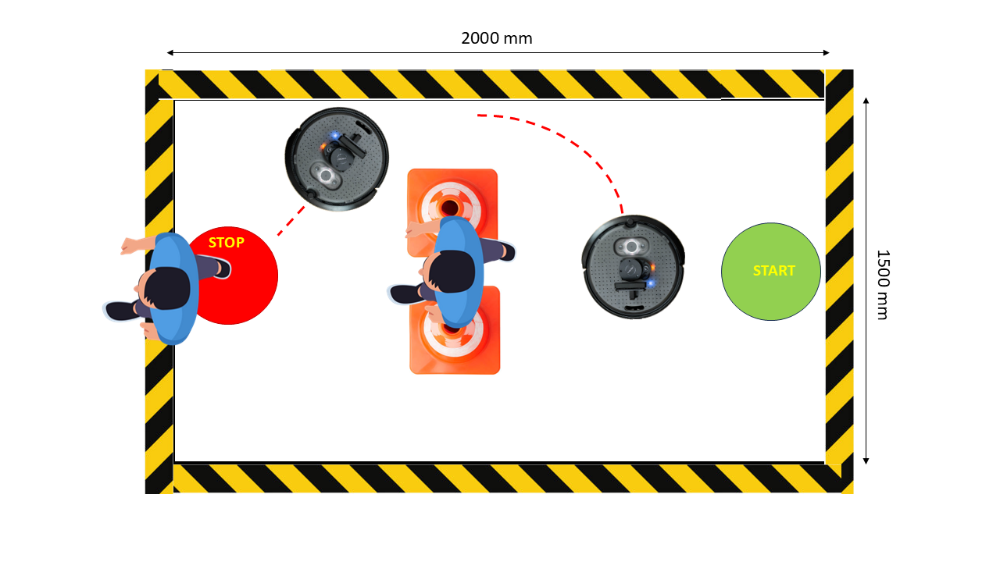

Welcome to the Multipurpose Macro Load Bearing Assistive Follower Robot Project
Team: 07
Course: RAS 598 Experimentation and Deployment of Robotic Systems, Arizona State University
Team Members
Rhutvik Pachghare
Pursuing a master's degree in robotics and autonomous systems, with a degree in Electrical Engineering and experience as a team lead software developer, specializing in cloud computing and multiple development languages.
Mohammad Nasr
Robotics and autonomous systems PhD student specializing in designing Bio-inspired hearing for robotic platforms.
Shashank Sing Deo
B.Tech in Mechanical Engineering, worked as systems and integration engineer with Evage motors designing N1 and M3 category vehicles for Indian, Middle east and European markets.
Introduction
This project seeks to explore how a mobile robotic system can effectively follow and assist a user while maintaining situational awareness through obstacle detection and user recognition. Specifically, we aim to develop a follower robot using a TurtleBot equipped with a depth camera and Lidar. This system will enable hands-free transportation of small items (e.g., groceries, shopping bags, or tools) and assist with tasks like carrying a camera for photography or videography. Through this research, we hope to contribute to the advancement and normalization of Assistive Robots Technology in everyday life.

Sensor Integration
The assistive follower robot will utilize a combination of the depth camera and LiDAR to achieve robust user tracking and situational awareness. The depth camera will be used for user recognition and tracking, while LiDAR will be used to ensure the robot maintains an optimal following distance. Additionally, LiDAR can be used for 360-degree obstacle detection and environmental mapping, allowing the robot to navigate dynamically changing environments safely.

Interaction
The TurtleBot 4 is equipped with a depth camera, LiDAR, and a Raspberry Pi board, enabling effective interaction and control. Due to the limited field of view of the depth camera and the desire to reduce computational load on the Raspberry Pi, we have adopted shoe detection as a lightweight and focused approach for user identification. A custom-trained model will detect the user's shoes, allowing us to estimate their direction relative to the image center. The image data will be processed externally on a PC or online on the raspberry pi, and the results will be used to guide robot's motion.
LiDAR will be used for 360-degree obstacle detection and distance maintenance, and will play a central role in real-time gap-finding navigation. In situations where the robot is unable to find a viable local path using the gap-finding algorithm, it will fall back on a pre-built SLAM map to determine an alternative route. This layered approach allows the robot to adapt intelligently to dynamic and complex environments.

Data collection & Image processing
To detect and localize shoes we focuse on developing a machine learning model capable of detecting shoes and estimating their position on-screen using an OAK-D camera mounted on a TurtleBot. The camera is fixed at a height of 192 mm from the ground, and its field of view has been calibrated to account for perspective distortion, including a measured offset of 180 mm between the camera’s optical center and the center of the captured image. Data collection was performed in a controlled indoor environment to ensure consistency, with the camera mounted on a tripod and a coordinate system marked on the floor to map image coordinates to physical positions. To capture the variability in shoe placement, eight different images were taken at each floor coordinate. Additionally, to teach the model to infer depth, five images were captured at varying distances from a fixed origin for each shoe position. Each image in the dataset is annotated with the shoe's bounding box, its physical distance from the camera, and its relative floor coordinate. As distance increases, both the bounding box size and screen mapping change due to perspective scaling. The proposed machine learning pipeline includes an object detection backbone—such as YOLOv8 or SSD—to identify shoes and predict bounding boxes, followed by a regression-based localization head to estimate the shoe's screen coordinates and, optionally, its physical distance from the camera. The overall methodology consists of several steps: data collection using the calibrated camera setup, preprocessing involving image normalization and augmentation (e.g., rotation and brightness variation), supervised training using annotated labels, rigorous evaluation on unseen environments and lighting conditions, and finally, real-time deployment integrated with the OAK-D camera’s live stream to enable real-time shoe localization on the robot.

Control and Autonomy
The depth camera will be used to detect the user's shoes in real-time, providing a simple yet effective method for user recognition and direction estimation. The image stream will be processed externally on our laptop or online on the raspberry pi, where a custom-trained model will identify the location of the shoes in the frame. This information will be translated into the user’s direction relative to the robot and communicated back to the TurtleBot over ROS2, allowing it to adjust its motion accordingly.
LiDAR will be the primary sensor for dynamic obstacle detection, gap-finding, and distance maintenance. It will also help refine the robot’s understanding of the user’s position by correlating the visual direction from the camera with the LiDAR scan to estimate the user’s distance. In cases where the gap-finding algorithm cannot identify a safe path forward, the robot will utilize a prebuilt SLAM map to determine an alternative route around obstacles, ensuring reliable and adaptive navigation in cluttered environments.
Current Progress
In our previous revision, we introduced the use of SLAM as a secondary navigation method. In this architecture, the robot primarily relies on a reactive gap-finding algorithm for real-time obstacle avoidance. However, in situations where a passable gap cannot be identified, the robot falls back on the SLAM-generated map to make informed navigation decisions. While the core logic of our system remains unchanged, we have made several refinements. In the updated setup, a SLAM node runs continuously to map the environment as the robot moves. Once the user’s heading is determined, it is sent as a goal to the Nav2 planner server. This server generates a global path based on the current map. My custom Reactive Gap Finder node, which subscribes to the /rpi_11/plan topic, receives this path, follows it, and performs local obstacle avoidance by identifying and navigating through gaps in the environment.
Current Challenges:
-
SLAM Integration Issues: Although our goal was to use the SLAM-generated map for secondary path planning, issues with the
turtlebot4_navigationpackage have made this integration difficult. I was able to successfully demonstrate the robot navigating using a map generated from my lab environment (see Figure 1 and the Navigation with Map video), but this success was not consistently reproducible. -
Obstacle Avoidance Conflicts: While the Reactive Gap Finder generally performs well, I observed that the robot occasionally collides with obstacles despite significant parameter tuning. This is the primary motivation behind fusing it with the Nav2 dynamic mapping and planning capabilities. However, integration poses a challenge: to avoid conflicting commands, we must isolate the
planner_serverfrom the fullturtlebot4_navigationstack. When both the Nav2 controller and my reactive gap logic publish to the/cmd_veltopic, the robot receives mixed commands and deviates from the intended path. This behavior is shown in the accompanying demonstration video. Attempts to resolve this by editing thenav2.yamlfile were unsuccessful.
Potential Final Solution: In case we can not use the nav2 and its planner server, we stick to my Reactive gap finder and we make sure to use the gaps that are in the direction of user.
Graphical User Interface (GUI)
Current Progress:
In this component of our project, we are simulate a ROS 2 NavigateToPose action server and integrate it with a PyQt5 graphical user interface (GUI) to visualize robot sensor data and navigation status. The action server acts as a dummy implementation that mimics the behavior of the standard NavigateToPose interface in ROS 2. It receives target pose goals from clients, simulates navigation by periodically publishing feedback (e.g., distance remaining), and returns a result upon completion to indicate whether the goal was successfully reached or not. Users can send goals using the ROS 2 command-line interface, specifying the desired position and orientation within the map frame. On the GUI side, we use PyQt5 to create a clean interface that displays LIDAR scan data, camera images, and the current status of the navigation process. The interface includes buttons to trigger visualizations and a status label that reflects the robot’s current state (e.g., Idle, Navigating, Completed). The GUI listens to the GoalStatusArray topic to receive real-time updates on the navigation goal, dynamically showing statuses such as Accepted, In Progress, or Aborted. In the final version, we replace the action server with the robot action server enabling us to monitor the navigation status. Loging buttons and camera will remain as tools for debugging purposes, while Lidar data display might not be needed in the final version.
Preparation Needs
What do you need to know to be successful?
- Learn to calibrate and operate the hardware like camera, LiDAR, Raspberry Pi
- Machine learning tools or OpenCV for optimal image processing
- Data filtering
- Control Logic and data flow
Which of those topics do you need to cover in class?
- Data filtering
- Control Logic and data flow
Final Demonstration
Conditions change in any environment. How will your robot handle variability in its environment? - Potential environmental variabilities include lighting conditions, the user’s relative direction with respect to the robot, and narrow gaps smaller than the robot’s diameter. - Changes in lighting conditions can affect image processing and user recognition accuracy. To address this, more advanced image processing algorithms that are robust to lighting variations will be explored. - In scenarios where the robot encounters narrow gaps that are smaller than its diameter, the robot needs predefined behavior. In our case, The robot will use SLAM and mapping as an alternative mean of motion planning. - To maintain accurate user tracking during movement, an optimal update rate for user position data will be determined. This will allow the robot to dynamically adjust the LiDAR beam it uses for distance keeping and movement direction correction, ensuring responsive and adaptive following behavior.
Testing & Evaluation Plan
Scenario 1: Linear and Turning Motion
The robot follows the person in a straight line and takes turns as the person takes turns in a 2000mm x 1500mm test area divided into 500mm vertical sections.

Scenario 2: Random Path Tracking
The robot must work autonomously and comprehend random paths traveled by the person. We plan to place start and stop markers for the target randomly in the test area with obstacles like traffic cones.

Scenario 3: Obstacle Detection and Alternate Path
The robot may encounter obstacles in its path and must devise a new path to reach the target person.

Impact
This project will advance assistive robotics by developing a follower robot that can safely navigate and help users in dynamic environments. It will help us learn advanced ROS2 communication, multi-sensor data fusion, and computer vision for real-time processing. We will also gain experience in dynamic path planning and obstacle avoidance. The knowledge gained will enhance our skills in robotics and autonomy. Our work can also contribute to course development by serving as an example helping future students.
Project Advisor
Dr. Daniel Aukes
Dr. Daniel Aukes is an Associate Professor and the director of the IDEAlab. His research investigates the nexus of design, manufacturing, and data-driven decision-making to develop robots that can operate in niche environments, with a focus on affordability and accessibility. IDEALab projects focus on new tools for designing robots by pairing emerging fabrication techniques and new materials with analytical and simulation-based methods for understanding the behavior of complex systems.
Weekly Milestones
| Week | Hardware Integration | Interface Development | Sensors | Controls & Autonomy |
|---|---|---|---|---|
| Week 7 | Set up TurtleBot 4, all team members access, configuration | N/A | Test data publishing from depth camera and LiDAR, IMU on ROS2 topics | N/A |
| Week 8 | Calibrate depth camera for user recognition; Configure LiDAR | Learn Rviz and Gazebo | Verify sensor data accuracy and publish on ROS2 topics | N/A |
| Week 9 | Ensure smooth data streaming to external PC for image processing | Use data visualization in real time with Rviz | Implement LiDAR, Depth Camera data | N/A |
| Week 10 | Finalize hardware setup and connections | Implement interaction features: mode switching, emergency stop, and distance adjustment | Implement LiDAR, Depth Camera data | Try object avoidance |
| Week 11 | N/A | User recognition modeling | Implement data acquisition and filtering for depth camera and LiDAR | Implement object avoidance |
| Week 12 | N/A | User recognition modeling | Real time image streaming and prediction | N/A |
| Week 13 | N/A | Real time user position update | Integrate sensor fusion | Implement motion control using user position feedback, and LiDAR data |
| Week 14 | N/A | N/A | Final sensor tuning and data visualization | System integration testing and debugging |
| Week 15 | Test Hardware in Demo Room | Test interaction features in Demo Room | Validate sensor accuracy and reliability | Final Test control logic and decision-making in dynamic environments |
| Week 16 | Demo | Demo | Demo | Demo |